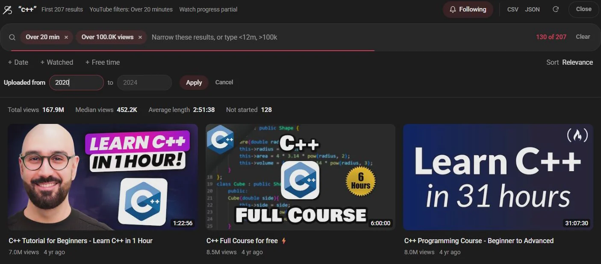

Guide 06·Search filters
How to filter YouTube search by views and exact length.
Updated 30 September 2026
Short answer
YouTube's Filters button offers three length buckets (under 3 minutes, 3 to 20, over 20), an upload date, and a Popularity sort. There's no view count filter and no exact length. With Needle, a free Chrome extension, you type them into the search bar instead: <12m, >100k, unwatched.
01·On YouTube
What YouTube's Filters menu can do
Search for something, then click Filters above the results. You get:
- Upload date: today, this week, this month, this year.
- Type: videos, channels, playlists and a few more.
- Duration: under 3 minutes, 3 to 20 minutes, over 20 minutes.
- Features: live, 4K, HD, subtitles, Creative Commons, 360, VR180, 3D, HDR.
- Prioritize: relevance or popularity.
YouTube has also started showing Watched and Unwatched chips on some results pages.
02·The gap
What it can't do
- View counts. Popularity isn't view count, and there's no way to say "only videos over 100K views".
- Exact lengths. Three buckets, that's it. A 10 minute limit isn't possible.
- Leaving a channel out. If one creator floods every search, you can't mute them.
03·With Needle
Type your filters with Needle
Needle lets you write filters straight into YouTube's search bar. Press Enter and anything YouTube can do itself, like date:week or is:4k, goes to YouTube as its own filter. The rest, like exact lengths and view counts, is applied to the results in Needle's panel. When a strict filter leaves too few, Load more keeps reading further down YouTube's results.

Every filter
<20m | Shorter than 20 minutes (also >45m, <1h, >90s) |
>100k | More than 100K views (also <5k, >1m views) |
unwatched | Never started (is:started for half watched, is:watched for done) |
is:fresh | Nothing you were shown in an earlier search |
date:week | Uploaded this week (also today, month, year) |
after:2023 | Uploaded after 2023 (before: works too, with a year, month or day) |
@name | Only from that channel |
-@name | Never from that channel |
-word | Leave out anything mentioning it |
sort:views | Most viewed first (also newest, oldest, longest, shortest) |
lang:en | Titles in English |
is:4k | YouTube's own feature filters: also is:live, is:hd, has:subtitles, is:creative-commons |
Try these
python tutorial <30m >100kproper tutorials that aren't three hours long.lofi is:freshonly results you haven't already scrolled past.phone review -@mkbhdfor when one channel fills the whole page.recipe date:month unwatchednew this month, and not something you've seen.
04·Questions
Questions?
Did YouTube remove sort by view count?
Yes. The old view count sort became Popularity, which weighs things like watch time as well as views. In Needle, >100k filters by the actual view count, and sort:views sorts by it.
Does YouTube see my filters?
Only the ones it has itself, like upload date. Needle takes the rest out of the query before YouTube sees it, so <12m never turns into a search for “<12m”.
Does it work on my phone?
No. Needle is for YouTube in a desktop browser: Chrome, or another browser that installs extensions from the Chrome Web Store.
Is it free?
Yes. No account, no trial, no paid tier.